Dumping Wii/GameCube games
For support in English, ask for help at RiiConnect24 on Discord.
Want to dump a GameCube or a Wii disk? There are two ways of doing so, depending on the tools you have available with you.
CleanRip
What you need
- An SD card or USB drive with at least 4.7 GB of free space (8.5 GB if dumping a dual layer disc).
- CleanRip
Instructions
Section I - Downloading/Installing
- Extract CleanRip and put it in the
appsfolder on your SD card or USB drive. - Insert your SD card into your Wii, and launch CleanRip from the Homebrew Channel.
Section II - Ripping
- Select your device that you will be dumping the game to - your USB drive or SD card. 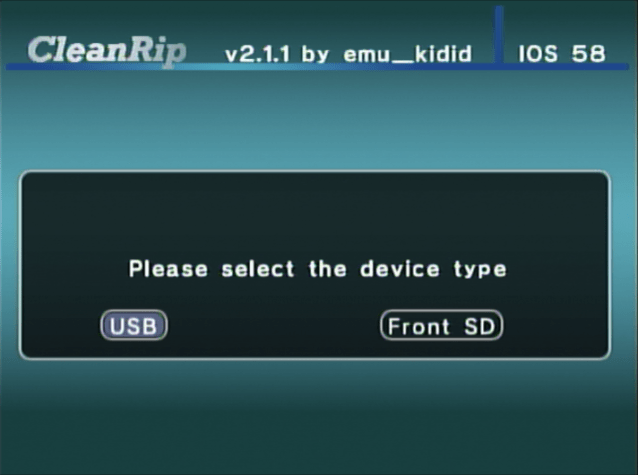
- On this screen, it asks you if you want to download a file with game checksums so you can verify the dump created is a 1:1 copy of the disc. It’s your choice whether to say
YesorNoto download this file. 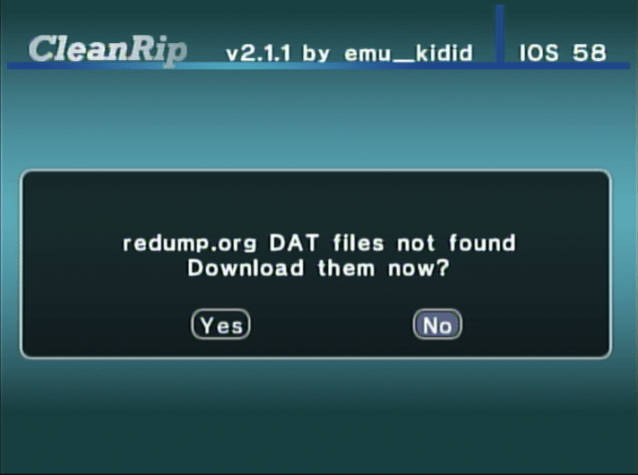 - Now insert the game you want to dump. 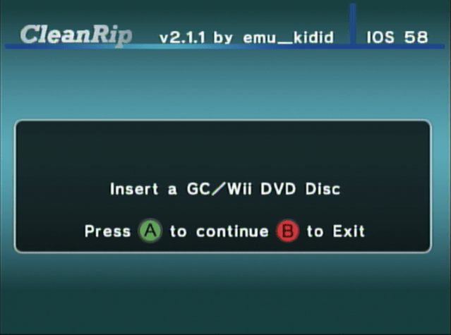 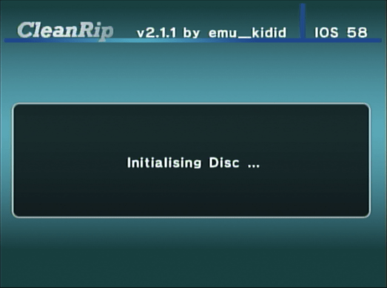
- Set it as shown on the screen below.
If you are dumping one of the 13 games on this list, set Dual Layer to Yes.
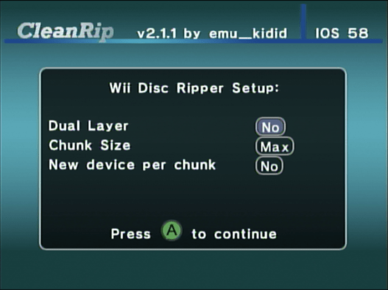
- CleanRip will now dump your game. It can take a while, since it will dump the full 4.7 GB disc contents (8.5 GB for dual layer discs). 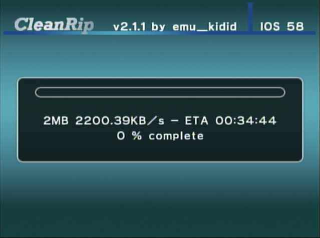
Dumping a game over a local network
What you need
Your Wii and your computer must be connected to one local network.
Instructions
Section I - Downloading/Installing
- Extract DVD Dump Tool and put it in the
appsfolder on your SD card or USB drive. - Insert your SD card into your Wii, and launch DVD Dump Tool from the Homebrew Channel.
Section II - Ripping
- Press the right on the D-pad and press A. 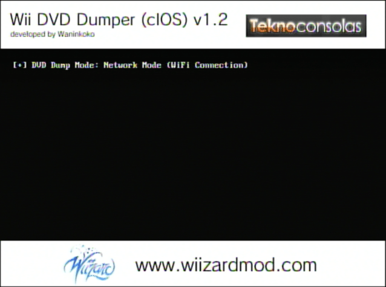
- Choose the disc that you want to copy (The options are:
GameCube Disc,Wii Single-Layer Disc,Wii Dual-Layer Discand press “A” 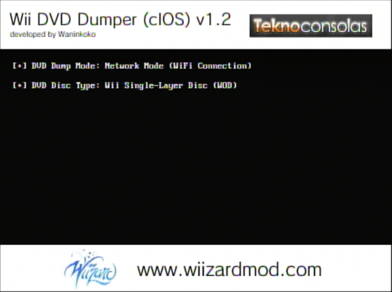 - Now put your game to your Wii. (If it’s already in your Wii, eject it and put it back.) 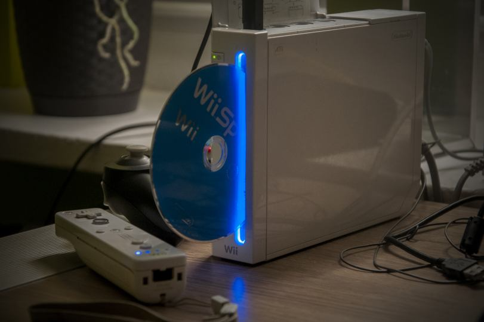 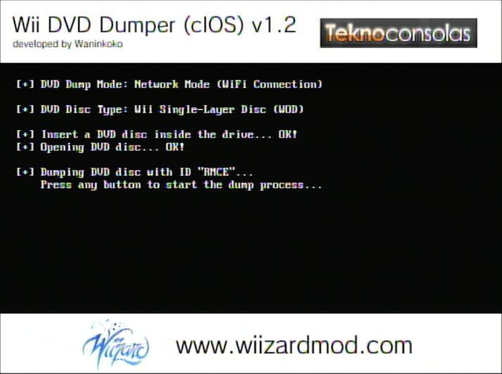
- Remember your Wii URL (IP address) 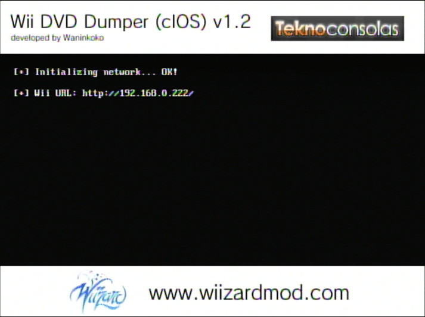
- On your computer’s web browser, go to your address bar and enter the Wii URL. 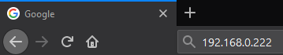
-
Click on
Click here to download XXXX.iso. 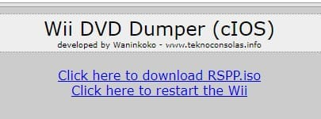The transfer speed is not the fastest, but if you can’t use anything else, it’s better than nothing.
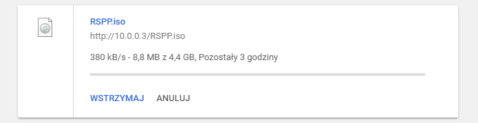
Joining split files
If you dumped the disc on a FAT32 formatted, device, you should’ve got at least 2 files that end with .partX.iso. They need to be joined up.
Windows
- Copy all the files that share the same name and end with
.partX.isoin a folder on your computer. - Open up a Command Prompt window.
- Use the
cd <path>command and replace<path>by the path to your.partX.isofiles. - Use the following command as is:
copy /b *.part?.iso game.iso.
macOS/Linux
- Copy all the files that share the same name and end with
.partX.isoin a folder on your computer. - Open up a Terminal.
- Use the
cd <path>command and replace<path>by the path to your.partX.isofiles. - Use the following command as is:
cat \*.part?.iso > game.iso.
To organize the games on your drive properly, you’ll need to use Wii Backup Manager.